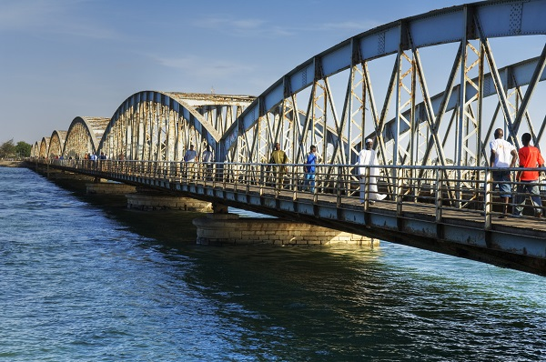

SAINT LOUIS |
 |
Saint-Louis, Ndar en wolof, souvent appelée « Saint-Louis-du-Sénégal », est l'une des plus grandes villes du Sénégal et, historiquement, l'une des plus importantes, comme en témoigne son inscription sur la liste du patrimoine mondial de l'UNESCO. C'était une des quatre communes ("Quatre Vieilles") historiques du Sénégal à statut de département français. Saint-Louis se trouve à l'embouchure du fleuve Sénégal, à 264 km1 au nord de la capitale du pays, Dakar, près de la frontière avec la Mauritanie. Du fait de cette situation géographique, au moment de la création du comptoir français, elle est simplement appelée « Île du Sénégal », puis « colonie du Sénégal » ; ce nom sera étendu à l'ensemble du Sénégal actuel après les annexions qui font suite à la conférence de Berlin. La République du Sénégal reprendra à son tour le nom du fleuve lors de son indépendance en 1960.